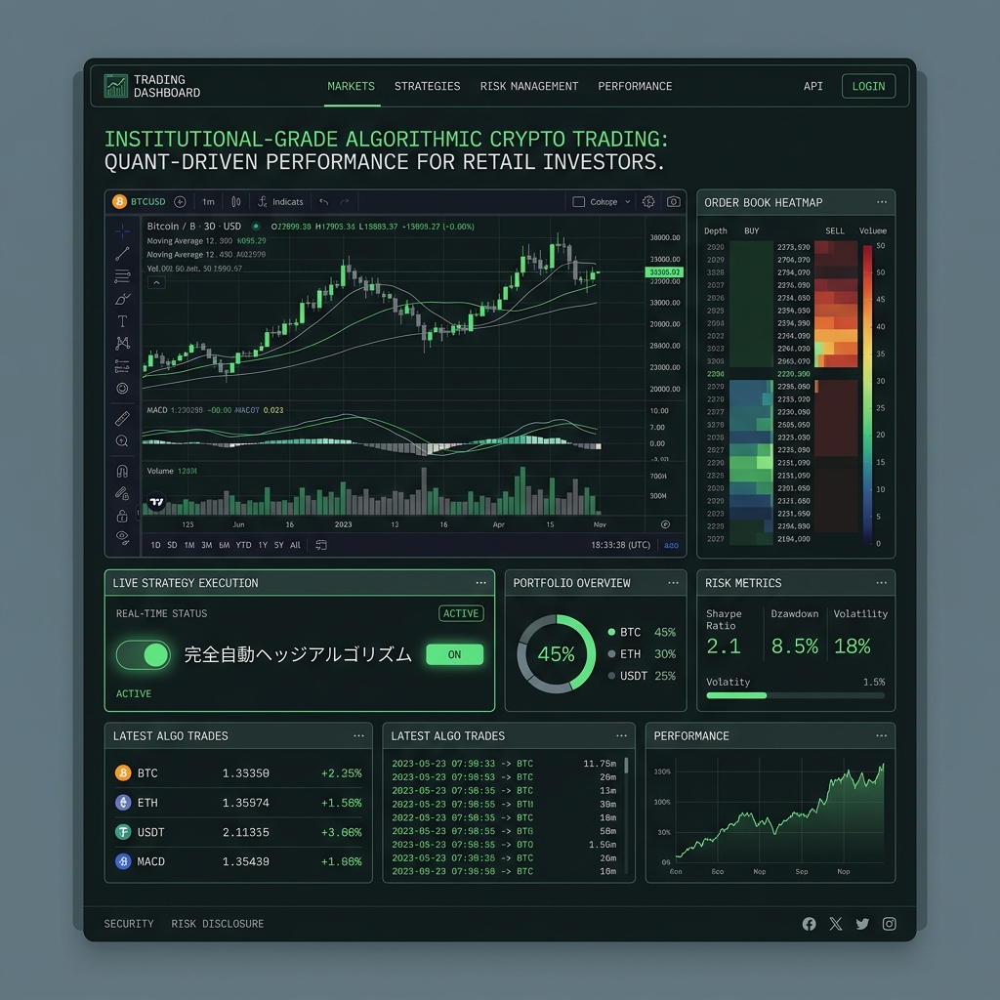

感情を排除した、
氷のアービトラージAI。
仮想通貨市場特有の「取引所間の価格差」や「一瞬の非効率性」を、24時間365日ミリ秒単位で検知・搾取する機関投資家レベルの自動売買ツール「ALPHABOT-PRO」。

人間の感情がもたらす致命的なエラー
パニック売り、FOMO（取り残される恐怖）による高値掴み、損切りの遅れ。トレードにおいて人間の「感情」は最大の敵です。休むことなく変動し続ける暗号資産市場において、手動トレードで勝ち続けることは統計学的に不可能です。
機関投資家の武器を、個人の手に
三角アービトラージの自動検知
A取引所のBTC、B取引所のETH、そしてUSDT。3つの通貨ペア間に一瞬生じる価格の歪み（無裁定機会）を検知し、リスクゼロでのサヤ抜きを実行。
ミリ秒のエグゼキューション
取引所のAPIとサーバーを物理的に近接（コロケーション）させることで、通信遅延を極限まで排除。他者より早く注文を約定させます。
AIによるセンチメント分析
X(旧Twitter)やニュースサイトから数万件のテキストをリアルタイム解析。「恐怖」や「強気」の市場心理を数値化し、暴落の予兆をいち早くキャッチしてポジションを解消します。
バックテストから導かれる絶対的な証明
「このロジックは本当に機能するのか？」ALPHABOT-PROは、過去5年間の全ティックデータをクラウド上で高速シミュレーションするバックテスト環境を標準搭載。カーブフィッティング（過剰最適化）を排除した、堅牢な戦略のみを稼働させることができます。
ドラッグ＆ドロップの戦略ビルダー
プログラミングの知識は一切不要です。「RSIが30以下」「MACDがクロス」「ボラティリティが急増」といったブロックを繋ぎ合わせるだけで、あなた独自の複雑なアルゴリズムを直感的に構築できます。
Case Study | 副業トレーダーの完全自動化
本業が忙しく、夜中に起きてチャートを見ては寝不足になっていたユーザー。ALPHABOT-PROの「フラッシュクラッシュ（瞬間的な暴落）時のリバウンド狙い」戦略をセットし放置。睡眠中に自動で利益を確定させ、感情のストレスから完全に解放されました。
投機から、高度な統計ゲームへ
私たちは魔法の錬金術を提供しているわけではありません。データサイエンスと圧倒的な演算能力を用いて、市場の非効率性を効率化する。それが結果としてあなたの利益に還元される、究極のクオンツ・プラットフォームです。